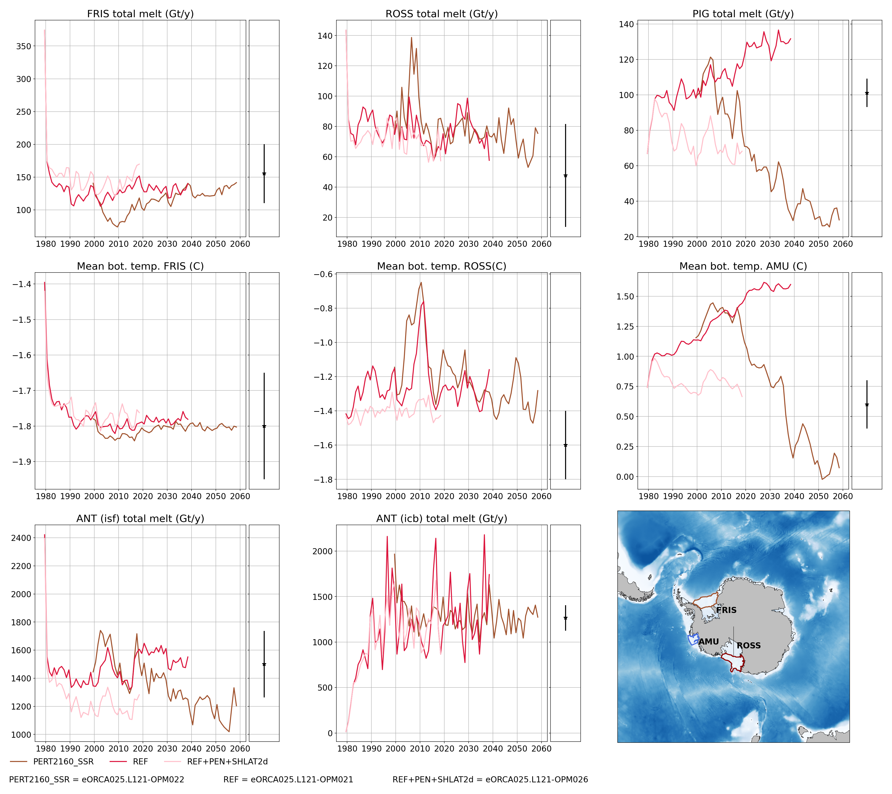
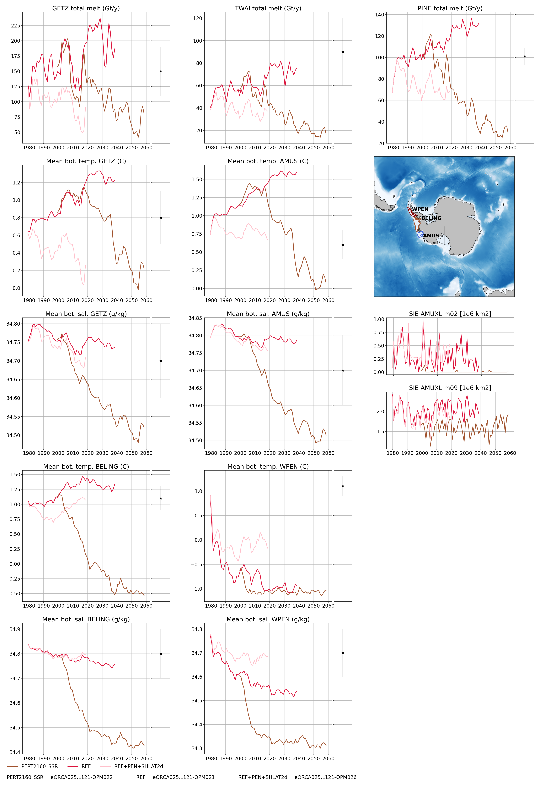
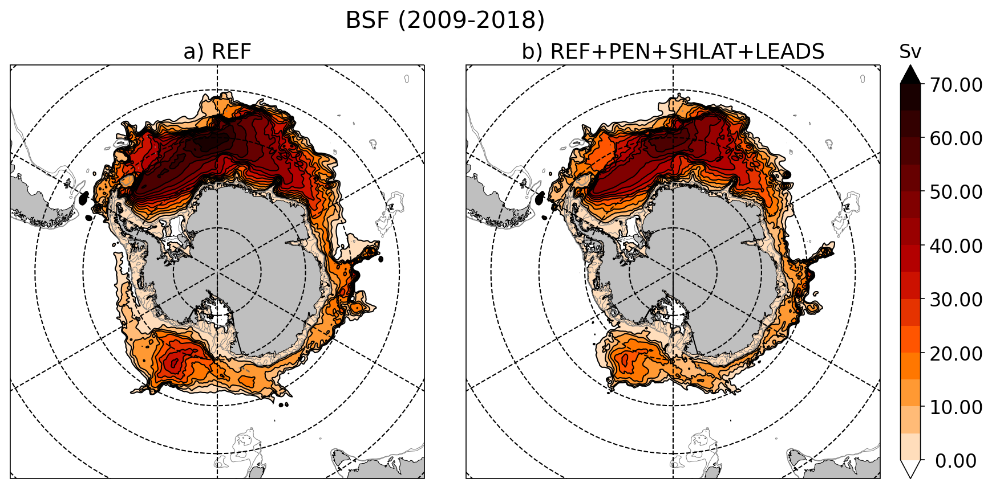
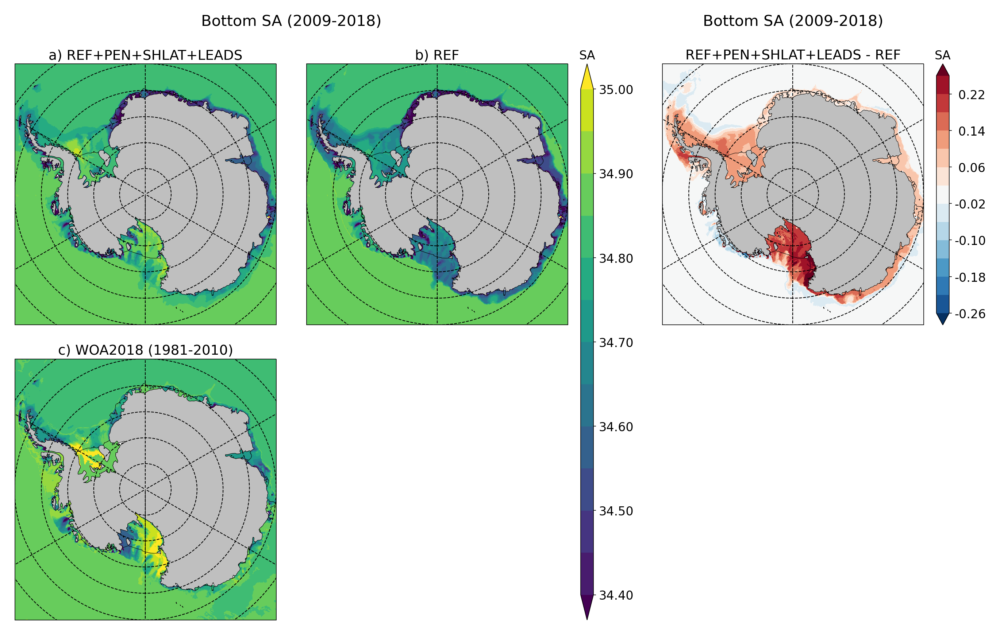
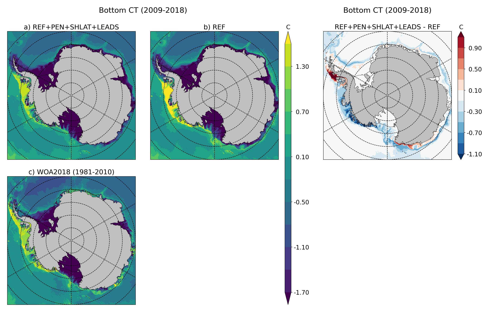

eORCA025.L121-OPM026¶
Summary¶
Compare to eORCA025.L121-OPM021, we improve the model behavior at the tip of Antarctic Peninsula and sss restoring is applied as a corretion from 021 run.
Namelist¶
Only the change compare to the reference (eORCA025.L121-OPM021) are mentioned in the next sections.
namelist_oce¶
!-----------------------------------------------------------------------
&namsbc_ssr ! surface boundary condition : sea surface restoring (ln_ssr =T)
!-----------------------------------------------------------------------
nn_sstr = 0 ! add a retroaction term to the surface heat flux (=1) or not (=0)
rn_dqdt = -40. ! magnitude of the retroaction on temperature [W/m2/K]
nn_sssr = 3 ! add a damping term to the surface freshwater flux (=2)
! ! or to SSS only (=1) or no damping term (=0) or read from a file (=3)
rn_deds = -166.67 ! magnitude of the damping on salinity [mm/day]
ln_sssr_bnd = .true. ! flag to bound erp term (associated with nn_sssr=2)
rn_sssr_bnd = 4.e0 ! ABS(Max/Min) value of the damping erp term [mm/day]
nn_sssr_ice = 1 ! control of sea surface restoring under sea-ice
! 0 = no restoration under ice : * (1-icefrac)
! 1 = restoration everywhere
! >1 = enhanced restoration under ice : 1+(nn_icedmp-1)*icefrac
cn_dir = './' ! root directory for the SST/SSS data location
!___________!_________________________!___________________!___________!_____________!________!___________!___________!__________!_______________!
! ! file name ! frequency (hours) ! variable ! time interp.! clim ! 'yearly'/ ! weights e ! rotation ! land/sea mask !
! ! ! (if <0 months) ! name ! (logical) ! (T/F) ! 'monthly' ! filename ! pairing ! filename !
sn_sst = 'NOT_USED.nc' , 24. , 'sst' , .false. , .false., 'yearly' , '' , '' , ''
sn_sss = 'eORCA025_sss_WOA2018_c3.0_v19812010.5.1' , -1. , 'sosaline' , .true. , .true. , 'yearly' , '' , '' , ''
/
!-----------------------------------------------------------------------
&namsbc_ssr_drk ! surface boundary condition : sea surface restoring (ln_ssr =T)
!-----------------------------------------------------------------------
ln_sssr_flt = .false. ! use filtering of SSS model for sss restoring
nn_shap_iter = 300 ! number of iteration of the shapiro filter
ln_sssr_msk = .true. ! use a mask near the coast
!___________!____________________!___________________!__________!_____________!________!___________!__________!__________!_______________!
! ! file name ! frequency (hours) ! variable ! time interp.! clim ! 'yearly'/ ! weights ! rotation ! land/sea mask !
! ! ! (if <0 months) ! name ! (logical) ! (T/F) ! 'monthly' ! filename ! pairing ! filename !
sn_coast = 'eORCA025_distcoast_b0.2_v0.0' , 0. , 'Tcoast' , .false. , .true. , 'yearly' , '' , '' , ''
sn_empc = 'eORCA025.L121-OPM021_y1999.1m.20y_flxT', -1. , 'sowafld' , .true. , .true. , 'yearly' , '' , '' , ''
rn_dist = 150. ! distance to the coast
/
Input files¶
Use eORCA025.L121_domain_cfg_b0.5_c3.0_d1.0.nc instead of eORCA025.L121_domain_cfg_b0.3_c3.0_d1.0.nc
Use eORCA025_shlat2d_v0.2.nc instead of eORCA025_shlat2d_v0.0.nc
Use eORCA025_bfr2d_v0.2.nc instead of eORCA025_bfr2d_v0.0.nc
Monitoring¶
Global indicators¶
On these plot you can find a time series of:
ACC transport
AMOC at rapid array
AMHT at rapid array
Net global heat fluxes
mean sst in the southern ocean (see box in the map)
mean sst in the North West Corner (see box in the map)
sea ice extent (arctic/ant in summer/winter)
Regional indicators¶
On these plot, you can find time series of:
ACC transport
Maximum of the Weddell and Ross Gyre (box where the max compute show in the map)
Mean bottom salinity over the main dense water formation hot spot (West Ross and West FRIS)
Mean bottom temperature over East Ross and Amudsen sea to monitor CDW intrusion
Local indicators¶
These plots monitor the evolution of ice shelf melting and the corresponding shelf properties (ROSS, FRIS, PINE, GETZ)
Amundsen/Belingshausen seas¶
These plot monitoring the evolution of temperature, salinity and ice shelf melt in Amundsen sea.
Evaluation¶
Ice shelf melt: the pictures below are the climatological melt for all the ice shelves in NEMO for the OPM026 and OPM021 simulations over the climatology (1989-1993) by sectors.


Map of ice shelf melt for both simulations OPM021 and OPM026 over the last decade of the simulations (1989-1993) with bottom temperature.


Map of barotropic stream function for both simulations OPM021 and OPM026 over climatology 1989-1993
Map of bottomT and bottomS for both simulations OPM021 and OPM026 over the climatology 1989-1993
 